Nu supunere. Identificare.
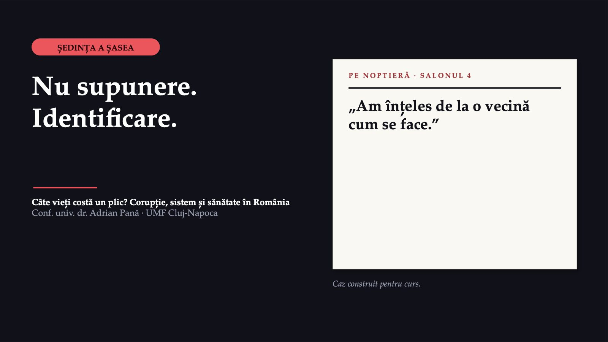
1 / 54Nu supunere. Identificare. Azi urmărim un singur caz, de la un plic găsit pe o noptieră până la o decizie pe holul unui spital. Ne întrebăm ce îi face pe oameni să facă lucruri pe care nu le-ar face singuri.
Nu supunere.
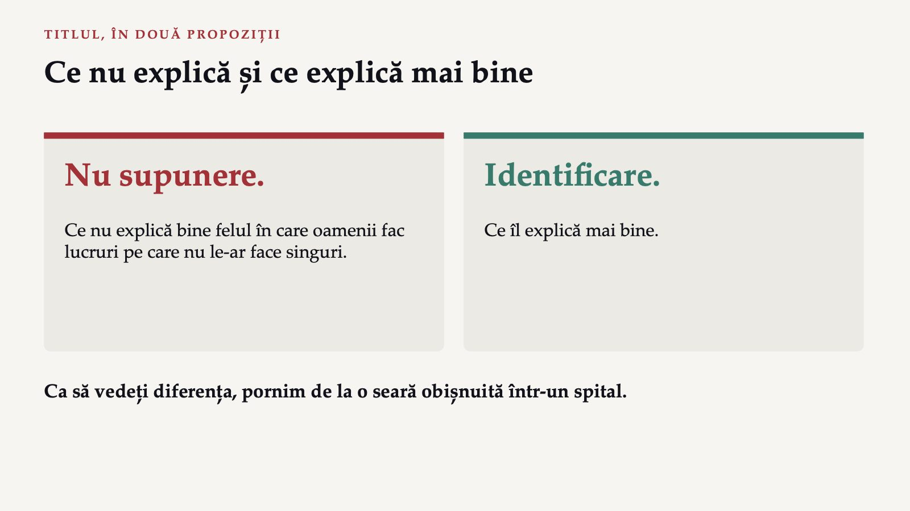
2 / 54Titlul de azi are două propoziții. Prima, „Nu supunere”, spune ce nu explică bine felul în care oamenii fac lucruri pe care nu le-ar face singuri. A doua, „Identificare”, spune ce îl explică mai bine. Ca să vedeți diferența, pornim de la o seară obișnuită într-un spital.
Un plic pe noptieră
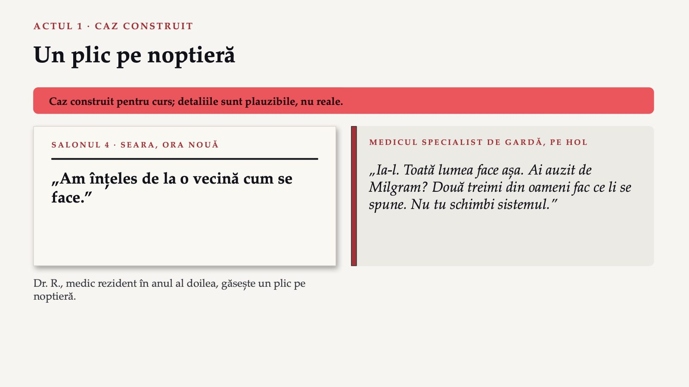
3 / 54Cazul de azi este construit pentru curs; detaliile sunt plauzibile, nu reale. Dr. R. este medic rezident în anul al doilea, la chirurgie generală. Seara, o pacientă de 51 de ani, operată a doua zi la prima oră, a lăsat un plic pe noptieră: „Am înțeles de la o vecină cum se face.” Dr. R. iese pe hol fără plic și îl întâlnește pe medicul specialist de gardă, care a văzut scena: „Ia-l. Toată lumea face așa. Ai auzit de Milgram? Două treimi din oameni fac ce li se spune. Nu tu schimbi sistemul.”
Un caz, trei acte, trei runde
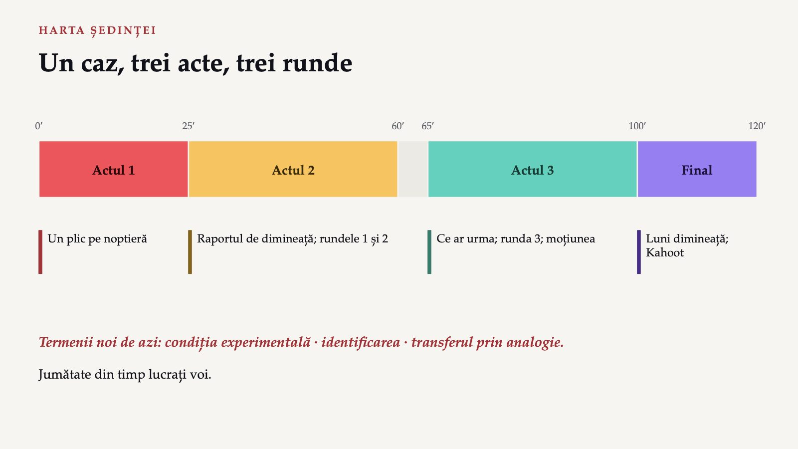
4 / 54Un caz, trei acte și trei runde de joc de rol. În primul act, plicul și prima decizie. În al doilea, raportul de dimineață și primele două runde. După cinci minute de odihnă, al treilea act: ce ar urma, runda a treia și o moțiune. Termenii noi de azi sunt trei: condiția experimentală, identificarea și transferul prin analogie. Jumătate din timp lucrați voi: votați, vă convingeți colegul de bancă, jucați o rundă sau o urmăriți.
Regula autoraportării
![ÎNAINTEA PRIMULUI VOT Regula autoraportării REGULA DIN PRIMA ȘEDINȚĂ, REPRODUSĂ CUVÂNT CU CUVÂNT Regula privind autoraportarea se enunță înaintea primului vot și se reia în ședința a șasea. Nicio activitate din acest curs nu vă cere să raportați despre voi înșivă, despre familiile voastre sau despre locul în care faceți practică. Voturile sunt voturi de opinie asupra unei propoziții generale și de estimare a unei cifre publicate, iar cazurile privesc persoane descrise într-o vinietă, nu participanții.](diapozitive/C06/005.jpg) 5 / 54
5 / 54Înainte de primul vot, regula din prima ședință, reluată cuvânt cu cuvânt. Regula privind autoraportarea se enunță înaintea primului vot și se reia în ședința a șasea. Nicio activitate din acest curs nu vă cere să raportați despre voi înșivă, despre familiile voastre sau despre locul în care faceți practică. Voturile sunt voturi de opinie asupra unei propoziții generale și de estimare a unei cifre publicate, iar cazurile privesc persoane descrise într-o vinietă, nu participanții.
Colegul invocă Milgram. Ce a arătat, de fapt, acel experiment?
 6 / 54
6 / 54Prima decizie. Votați singuri, fără să vă uitați la colegi: colegul de gardă invocă experimentul lui Milgram. Ce a arătat, de fapt, acel experiment?
Colegul invocă Milgram. Ce a arătat, de fapt, acel experiment?
 7 / 54
7 / 54Aveți două minute ca să-l convingeți pe colegul de bancă care a votat altfel. Apoi votați din nou, pe aceleași variante.
Ce s-a schimbat după discuție?
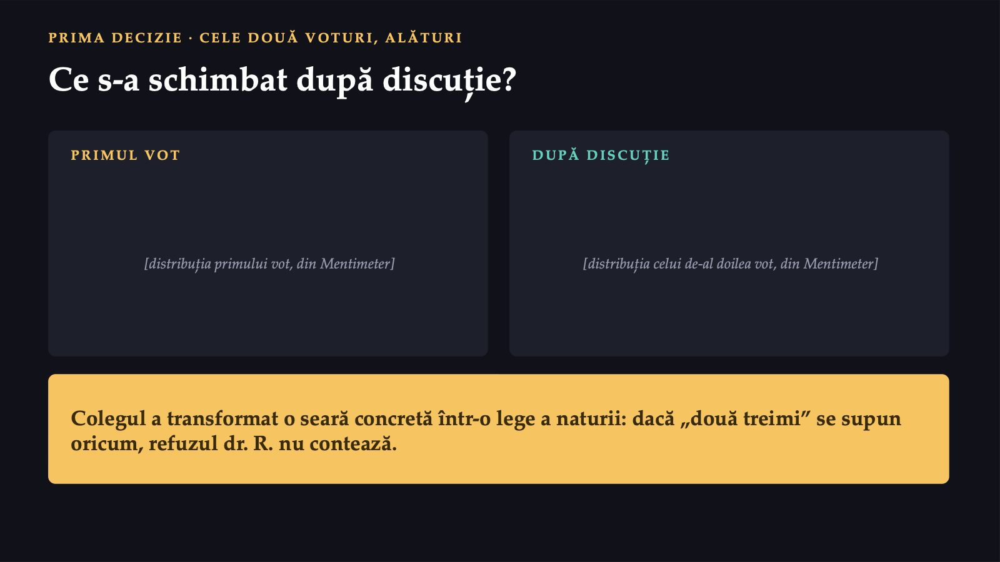
8 / 54Iată cele două voturi, unul lângă altul. Observați ce a făcut colegul de gardă: a transformat o seară concretă într-o lege a naturii. Dacă „două treimi” se supun oricum, atunci refuzul dr. R. nu contează. Întrebarea ședinței este dacă experimentul spune într-adevăr asta.
Condiția experimentală
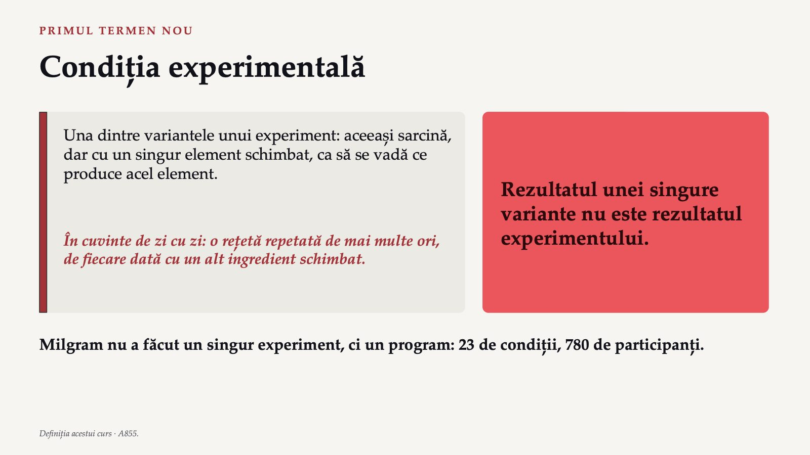
9 / 54Primul termen nou: condiția experimentală. Este una dintre variantele unui experiment: aceeași sarcină, dar cu un singur element schimbat, ca să se vadă ce produce acel element. În cuvinte de zi cu zi: o rețetă repetată de mai multe ori, de fiecare dată cu un alt ingredient schimbat. Rezultatul unei singure variante nu este rezultatul experimentului. Stanley Milgram, de la Universitatea Yale, nu a făcut un singur experiment, ci un program întreg: 23 de condiții și 780 de participanți. Un participant numit „profesor” primea ordin să administreze unui „elev” șocuri tot mai puternice. Șocurile nu erau reale, iar „elevul” era un actor.
Două treimi, dintr-o singură condiție
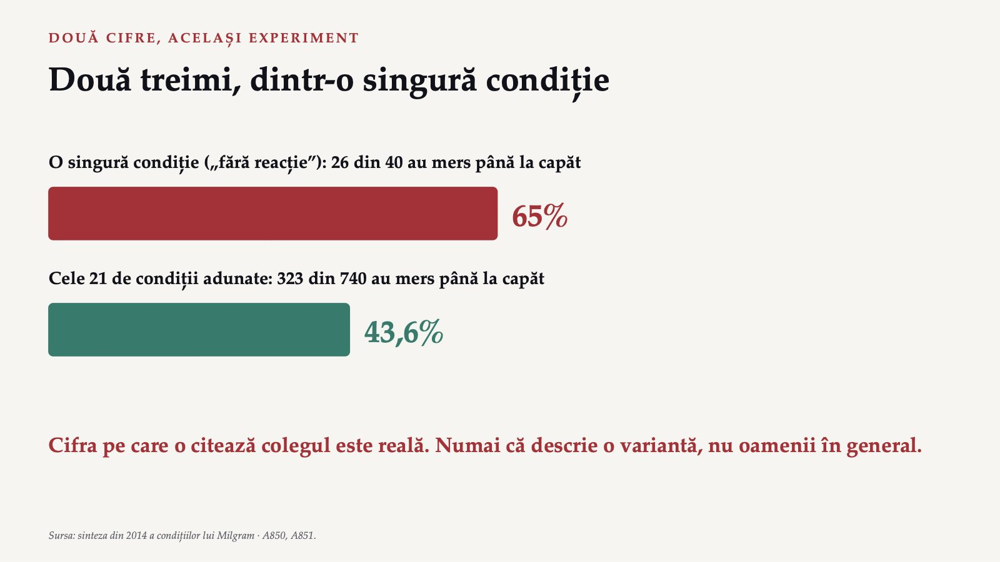
10 / 54Haslam, Loughnan și Perry au adunat în 2014 datele din 21 dintre aceste condiții, cu 740 de participanți. Au mers până la capăt 323, adică 43,6%: sub jumătate, nu două treimi. De unde vine atunci „două treimi”? Dintr-o singură condiție, numită „fără reacție”: 40 de participanți, dintre care 26 au mers până la capăt, adică 65%. Cifra pe care o citează colegul dr. R. este reală. Numai că descrie o variantă, nu oamenii în general.
Rezultate foarte diferite
 11 / 54
11 / 54Cât contează varianta? Mult. Când experimentul a fost mutat de la Yale într-un birou din orașul Bridgeport, proporția celor care au mers până la capăt a fost 47,5%, față de 62,5% în condiția comparabilă de la Yale. În condiția în care doi colegi ai participantului refuzau să continue, au mers până la capăt 10%, față de 46% în celelalte condiții. Aceeași sarcină, aceeași autoritate, rezultate foarte diferite. Haslam și colegii lui au trecut în revistă zece manuale de psihologie socială: un manual pomenește în medie 7,6 condiții, iar nouă condiții nu apar în niciunul. Studenții învață, de obicei, o variantă și o iau drept tot experimentul.
Răspunsul apare după ședință
Răspunsul apare după ședință
Identificarea
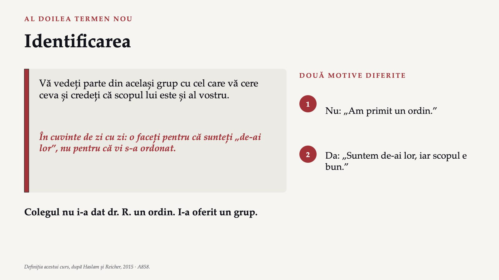
13 / 54Al doilea cuvânt din titlu: identificarea. În acest curs, identificarea înseamnă că vă vedeți parte din același grup cu cel care vă cere ceva și credeți că scopul lui este și al vostru. În cuvinte de zi cu zi: o faceți pentru că sunteți „de-ai lor”, nu pentru că vi s-a ordonat.
Starea agentică sau adepții angajați
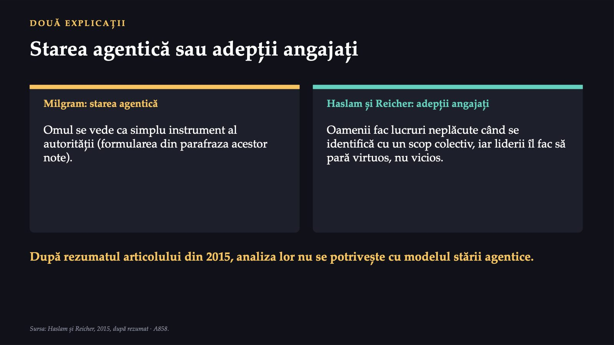
14 / 54Milgram și-a explicat rezultatele prin ceea ce a numit „starea agentică”: pe scurt, în parafraza acestor note, starea în care omul se vede ca simplu instrument al autorității. Alexander Haslam și Stephen Reicher propun altă explicație, pe care o numesc modelul adepților angajați. După rezumatul articolului lor din 2015, disponibilitatea de a face lucruri neplăcute depinde de identificarea cu un scop colectiv, iar liderii cultivă această identificare făcând scopul să pară virtuos, nu vicios. Același rezumat spune explicit că analiza lor nu se potrivește cu modelul stării agentice.
Trei tipuri de date
 15 / 54
15 / 54A doua explicație se sprijină pe trei tipuri de date. Primul: Reicher, Haslam și Smith au luat 15 dintre cele 23 de condiții și au comparat proporția celor care au mers până la capăt cu evaluările unor psihologi și ale unor studenți, privind identificarea cu experimentatorul și cu „elevul”. În lectura autorilor, decisiv este de partea cui se simte participantul. Al doilea: materialele din cutia 44 a arhivei Milgram de la Yale; după rezumatul studiului din 2015, trăsătura cea mai vizibilă era bucuria de a fi participat. Al treilea: momentul de 150 de volți, exact punctul în care două loialități intră în conflict. O lectură posibilă, propusă de aceste note: cei care se opreau atunci nu ascultau mai puțin, ci alegeau de partea cui sunt. Întrebarea de la acel moment este: cui îi datorez ceva aici, experimentatorului sau omului care cere să plece?
O repetare parțială și un rezultat care nu se potrivește
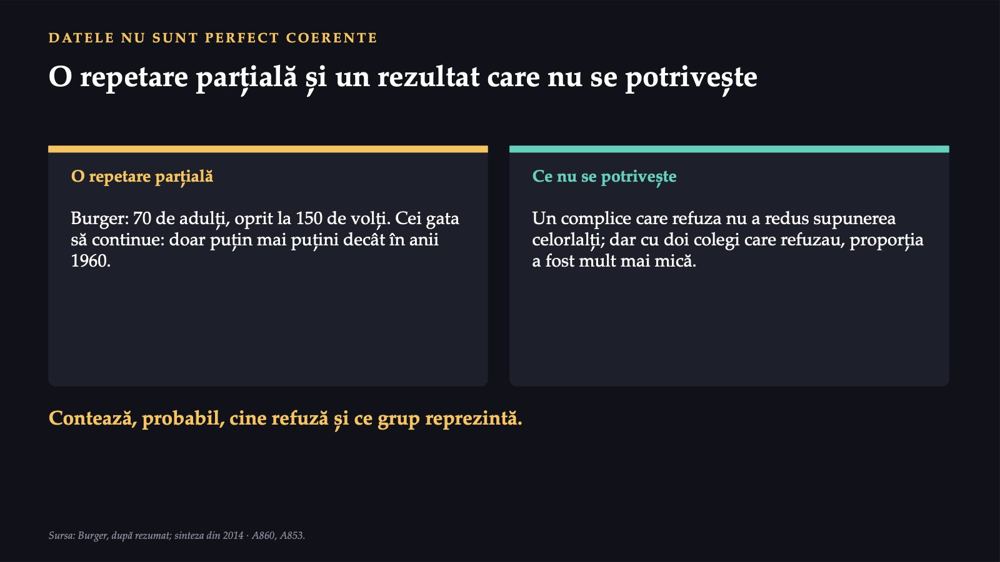
16 / 54Rezultatele nu au dispărut în timp. Jerry Burger a repetat parțial experimentul cu 70 de adulți, dar l-a oprit la 150 de volți. După rezumatul articolului, proporția celor gata să continue a fost doar puțin mai mică decât în anii 1960. Burger a mai găsit ceva ce nu se potrivește cu tot restul: un complice care refuza să continue nu a redus supunerea celorlalți. În sinteza din 2014, condiția cu doi colegi care refuzau a avut o proporție mult mai mică. Datele nu sunt deci perfect coerente, și e bine să știți asta. Un singur coleg care refuză s-ar putea să nu ajungă; contează, probabil, cine este și ce grup reprezintă.
Cu cine se va identifica dr. R.?
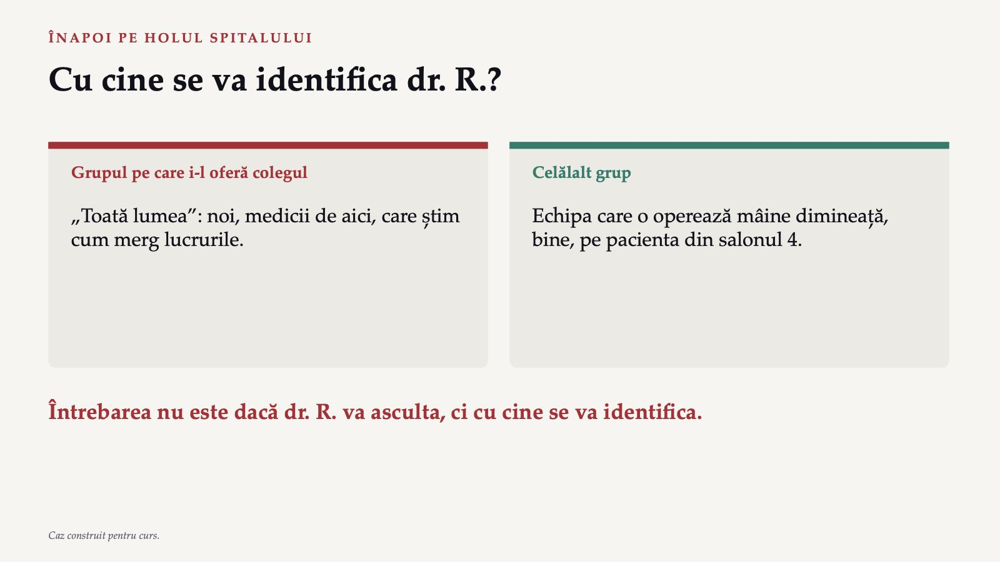
17 / 54Înapoi pe holul spitalului. Colegul de gardă nu i-a dat dr. R. un ordin. I-a oferit un grup: „toată lumea”, adică noi, medicii de aici, care știm cum merg lucrurile. Mai este și alt grup cu care dr. R. se poate identifica: echipa care o operează mâine dimineață, bine, pe pacienta din salonul 4. Întrebarea nu este dacă dr. R. va asculta, ci cu cine se va identifica.
Raportul de dimineață
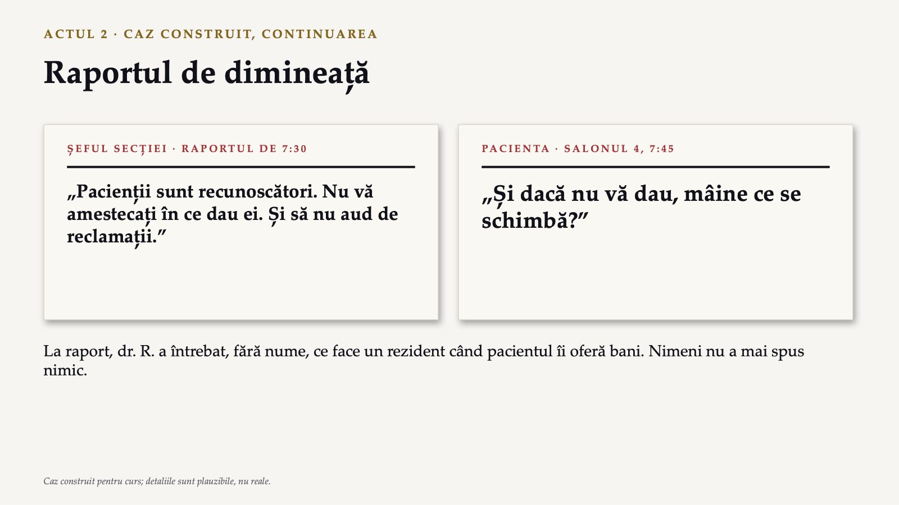
18 / 54Al doilea act, continuarea cazului; este tot un caz construit. Dr. R. a lăsat plicul pe noptieră și nu a spus nimic. Dimineață, la raportul de gardă, întreabă, fără să dea nume, ce trebuie să facă un rezident când un pacient îi oferă bani. Șeful secției răspunde scurt: „Pacienții sunt recunoscători. Nu vă amestecați în ce dau ei. Și să nu aud de reclamații.” Nimeni nu mai spune nimic. La 7:45, înainte să coboare la sala de operație, dr. R. trece prin salonul 4. Pacienta o întreabă, încet: „Și dacă nu vă dau, mâine ce se schimbă?”
Într-o secție în care plicul e obiceiul, ce ar schimba cel mai mult comportamentul medicilor?
 19 / 54
19 / 54A doua decizie. Votați singuri: într-o secție în care plicul este obiceiul, ce ar schimba cel mai mult comportamentul medicilor?
Într-o secție în care plicul e obiceiul, ce ar schimba cel mai mult comportamentul medicilor?
 20 / 54
20 / 54Două minute cu colegul de bancă: convingeți-l pe cel care a votat altfel. Apoi votați din nou, pe aceleași variante.
Ce s-a schimbat după discuție?
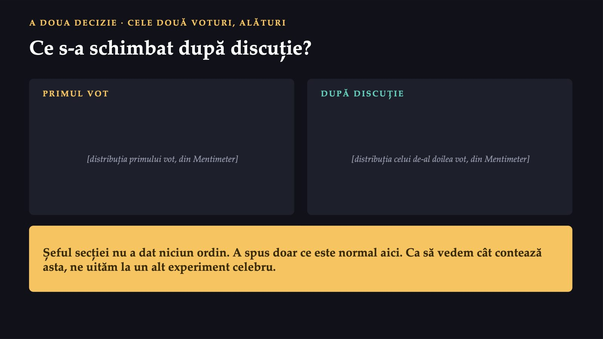
21 / 54Iată cele două voturi, alături. Șeful secției nu a dat niciun ordin. A spus doar ce este normal aici. Ca să vedem cât contează asta, ne uităm la un alt experiment celebru, despre care se știe acum mult mai mult decât se știa acum douăzeci de ani.
11 din 17
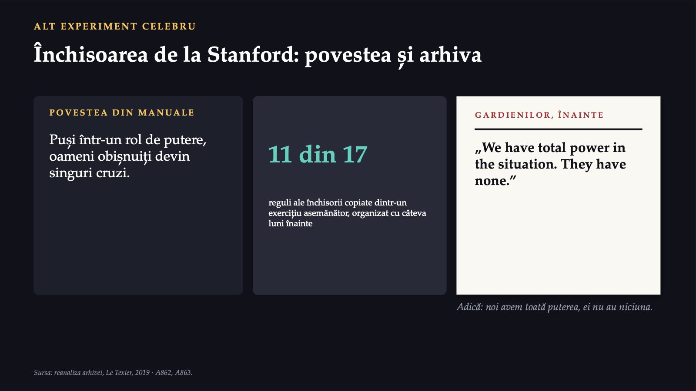
22 / 54La începutul anilor 1970, la Universitatea Stanford, psihologul Philip Zimbardo a împărțit câțiva studenți în „gardieni” și „deținuți”, într-o închisoare simulată. Povestea care a ajuns în manuale este simplă: puși într-un rol de putere, oameni obișnuiți devin singuri cruzi. În 2019, sociologul Thibault Le Texier a reanalizat arhiva experimentului. Din cele 17 reguli ale închisorii, 11 au fost copiate direct dintr-un exercițiu asemănător, organizat cu câteva luni înainte, tot la Stanford, de un student al lui Zimbardo. Gardienii au fost și instruiți: la întâlnirea de dinaintea experimentului, coordonatorul le-a spus „We have total power in the situation. They have none.”, adică noi avem toată puterea, ei nu au niciuna.
Mai puțin decât s-a crezut
![CE SPUN DATELE DESPRE COMPORTAMENT Mai puțin decât s-a crezut 1 Tabelul interacțiunilor negative dintre gardieni și deținuți, construit pe filmări, acoperă numai 4% din durata experimentului. 2 Mai multe relatări, între care una a lui Zimbardo, spun că jumătate dintre deținuți au trebuit eliberați. După arhivă, doar doi par să fi avut simptomele unei căderi nervoase. 3 Concluzia lui Le Texier: un studiu foarte defectuos, care ar fi trebuit să dispară devreme. Sursa: Le Texier, 2019; relatările experimentului · A865, A889, A866, A867.](diapozitive/C06/023.jpg) 23 / 54
23 / 54Datele despre comportament sunt și ele mai subțiri decât s-a crezut. Tabelul cu interacțiunile negative dintre gardieni și deținuți, construit pe filmări, acoperă numai 4% din durata experimentului. Mai multe relatări ale experimentului, între care una a lui Zimbardo, spun că jumătate dintre deținuți au fost atât de tulburați încât au trebuit eliberați înainte de termen. După arhivă, doar doi par să fi avut cu adevărat simptomele unei căderi nervoase. Le Texier își încheie articolul spunând că arhivele arată experimentul așa cum a fost: un studiu foarte defectuos, care ar fi trebuit să dispară devreme.
Rolurile, singure, rareori produc cruzime
![ACELEAȘI MATERIALE, ALTĂ CITIRE Rolurile, singure, rareori produc cruzime Mulți deținuți au rezistat autorității până la sfârșit. Mulți gardieni au refuzat să-și impună autoritatea; câțiva au fost brutali, alții nu, iar unii au trecut de partea deținuților. Cruzimea apare când un lider îi încurajează pe oameni să se identifice cu ceea ce prezintă drept o cauză nobilă a grupului. La Milgram și la Stanford a contat ce spunea liderul despre scopul grupului. Sursa: Haslam, Reicher și Van Bavel · A868, A869.](diapozitive/C06/024.jpg) 24 / 54
24 / 54În același număr al revistei, Alexander Haslam, Stephen Reicher și Jay Van Bavel au citit aceleași materiale altfel decât Zimbardo. Mulți deținuți au rezistat autorității până la sfârșit. Mulți gardieni au refuzat să-și impună autoritatea; câțiva au fost brutali, alții nu, iar unii au trecut chiar de partea deținuților. Explicația propusă de autori: rolurile, singure, rareori produc cruzime. O produc când un lider îi încurajează pe oameni să se identifice cu ceea ce el prezintă drept o cauză nobilă a grupului. Observați legătura cu Milgram: în ambele cazuri, explicația „oamenii obișnuiți se supun și devin cruzi” s-a dovedit prea simplă. În ambele, a contat ce spunea liderul despre scopul grupului.
O singură frază a seniorului
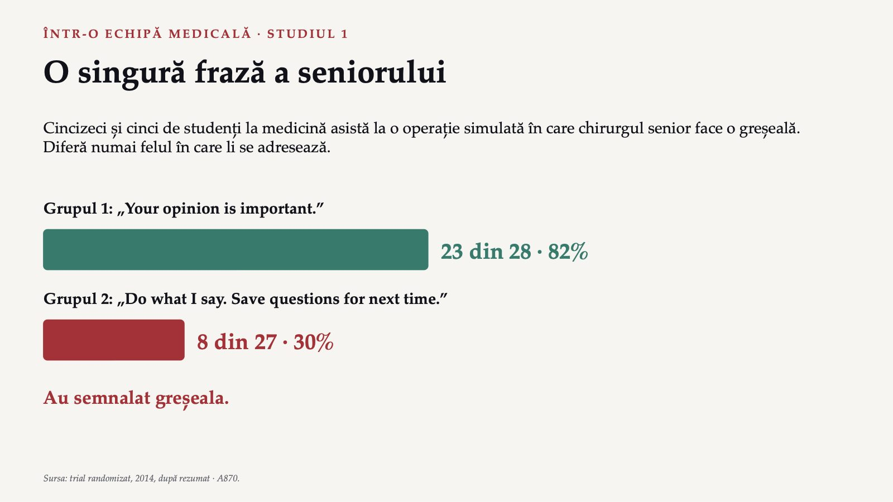
25 / 54Experimentele de psihologie socială nu sunt despre spitale. Există însă studii făcute chiar în echipe medicale, despre o întrebare apropiată: când îndrăznește un medic mai tânăr să spună „nu” sau să semnaleze o greșeală? Primul este un trial randomizat publicat în 2014, pe care îl cunoaștem după rezumat. Cincizeci și cinci de studenți la medicină au asistat la o operație simulată, o salpingectomie laparoscopică, în care chirurgul senior făcea o greșeală. Într-un grup, chirurgul le spunea, de pildă, „Opinia ta este importantă”; în celălalt, „Faceți ce spun eu; lăsați întrebările pentru altă dată”. Au semnalat greșeala 23 din 28 de studenți, adică 82%, în primul grup și 8 din 27, adică 30%, în al doilea. Numai fraza seniorului diferea între grupuri.
Un curs singur nu a schimbat nimic
![ÎN ECHIPELE MEDICALE · STUDIILE 2 ȘI 3 Un curs singur nu a schimbat nimic Un atelier de 50 de minute 35 de medici anesteziști în intervenție, 36 în control: nicio diferență semnificativă în cele trei situații simulate. O echipă ierarhică sau nu 49 de rezidenți: sânge administrat în 62% față de 57% dintre cazuri, diferență nesemnificativă. Nici cursul, nici organizarea echipei, ci felul în care s-a adresat seniorul. Niciun studiu nu e despre plăți informale. Sursa: trialuri randomizate, după rezumat · A871, A872.](diapozitive/C06/026.jpg) 26 / 54
26 / 54Al doilea studiu, cunoscut tot după rezumat, este un experiment randomizat făcut la Boston, cu medici anesteziști. Grupul de intervenție a primit un atelier de 50 de minute despre cum să semnaleze o problemă în sala de operație; 35 de medici au fost în grupul de intervenție și 36 în grupul de control. Nu a apărut nicio diferență semnificativă statistic în niciuna dintre cele trei situații simulate. Al treilea, un trial randomizat cu 49 de rezidenți la anestezie, a comparat o echipă simulată organizată ierarhic cu una neierarhică. Structura echipei nu a schimbat cât de des rezidenții contestau o decizie greșită a specialistului; de exemplu, sângele a fost administrat în 62% față de 57% dintre cazuri. Cele trei studii nu spun același lucru, și asta e informația. Atenție la ce nu arată: niciunul nu este despre plăți informale, toate sunt simulări, cu participanți puțini.
Legea nr. 46/2003 și donațiile
![CE SPUNE LEGEA Legea nr. 46/2003 și donațiile Art. 34 alin. (1): nicio formă de presiune asupra pacientului ca să vă recompenseze altfel decât prin plățile legale ale unității. Până la 14 aprilie 2025 Pacientul putea oferi angajaților sau unității plăți suplimentare sau donații. Din 14 aprilie 2025, art. 34 alin. (2) „Pacientul poate face donații unității sanitare unde a fost îngrijit, cu respectarea dispozițiilor legale în materie”. Acum, pacientul poate dona spitalului, nu medicului. Sursa: Legea nr. 46/2003, în forma în vigoare · A093, A094, A886.](diapozitive/C06/027.jpg) 27 / 54
27 / 54Răspunsul la întrebarea pacientei, „mâine ce se schimbă?”, nu este doar o chestiune de etică. Legea nr. 46/2003 a drepturilor pacientului spune, la art. 34 alin. (1), că personalul medical sau nemedical nu are dreptul să supună pacientul niciunei forme de presiune pentru a-l determina să îl recompenseze altfel decât prevăd reglementările de plată legale ale unității. Alineatul (2) a fost modificat prin Legea nr. 46/2025. Din 14 aprilie 2025, art. 34 alin. (2) spune: „Pacientul poate face donații unității sanitare unde a fost îngrijit, cu respectarea dispozițiilor legale în materie”. Forma anterioară îi permitea pacientului să ofere angajaților sau unității plăți suplimentare sau donații. Dacă ați auzit că „legea îi permite pacientului să dea”, ați auzit forma veche. Acum, pacientul poate dona spitalului, nu medicului.
„Toată lumea face așa” nu este o apărare
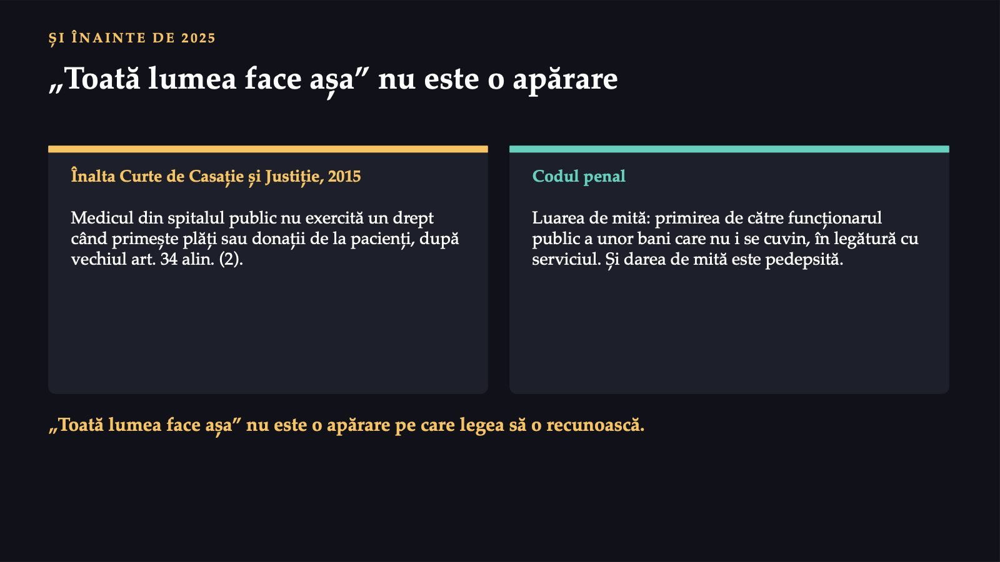
28 / 54Și înainte de 2025, Înalta Curte de Casație și Justiție stabilise, printr-o decizie din 2015, că primirea de către medicul angajat într-un spital public, care are calitatea de funcționar public în sensul Codului penal, a unor plăți suplimentare sau donații de la pacienți, în condițiile vechiului art. 34 alin. (2), nu este exercitarea unui drept recunoscut de lege. Codul penal pedepsește luarea de mită, adică primirea de către funcționarul public a unor bani care nu i se cuvin, în legătură cu îndatoririle lui de serviciu, și darea de mită. Nu vă spunem ce ar decide o instanță într-un caz anume; vă spunem doar că „toată lumea face așa” nu este o apărare pe care legea să o recunoască.
„Mâine ce se schimbă?” Nimic. Și trebuie spus.
![PENTRU PACIENTA DIN SALONUL 4 „Mâine ce se schimbă?” Nimic. Și trebuie spus. 35 Art. 35 alin. (1): dreptul la îngrijiri medicale continue. 29 Art. 29 alin. (1): când tratamentul e limitat, pacienții se aleg numai pe criterii medicale. 11 Art. 11 alin. (1): dreptul la o altă opinie medicală. 37 Art. 37 alin. (1): încălcarea drepturilor atrage răspundere disciplinară, contravențională sau penală. Dacă medicul refuză și tace, pacienta rămâne cu teama cu care a pus plicul. Sursa: Legea nr. 46/2003 · A882, A883, A884, A885.](diapozitive/C06/029.jpg) 29 / 54
29 / 54Pentru pacienta din salonul 4 contează și alte articole ale aceleiași legi. Art. 35 alin. (1): pacientul are dreptul la îngrijiri medicale continue până la ameliorarea stării sale de sănătate sau până la vindecare. Art. 29 alin. (1): când furnizorii trebuie să selecteze pacienții pentru tratamente disponibile în număr limitat, selectarea se face numai pe baza criteriilor medicale. Art. 11 alin. (1): pacientul are dreptul de a cere și de a obține o altă opinie medicală. Iar art. 37 alin. (1) prevede că nerespectarea drepturilor pacientului atrage, după caz, răspunderea disciplinară, contravențională sau penală. Așadar, răspunsul la întrebarea „mâine ce se schimbă?” este „nimic”, și nu e doar o promisiune frumoasă: este ce cere legea. Dar trebuie spus. Pacienta nu cunoaște legea și nu are de unde ști că îngrijirea ei nu depinde de plic.
Răspunsul apare după ședință
Răspunsul apare după ședință
Patru elemente ale unui refuz
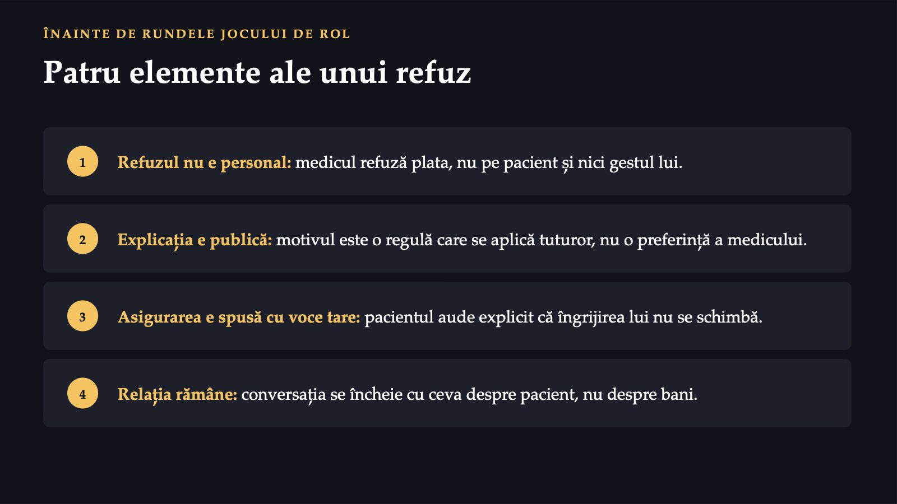
31 / 54Fiecare rundă se judecă după patru elemente. Refuzul nu e personal: medicul refuză plata, nu pe pacient și nici gestul lui. Explicația e publică: motivul este o regulă care se aplică tuturor, nu o preferință a medicului. Asigurarea e spusă cu voce tare: pacientul aude explicit că îngrijirea lui nu se schimbă. Relația rămâne: conversația se încheie cu ceva despre pacient, nu despre bani.
Runda 1: la externare
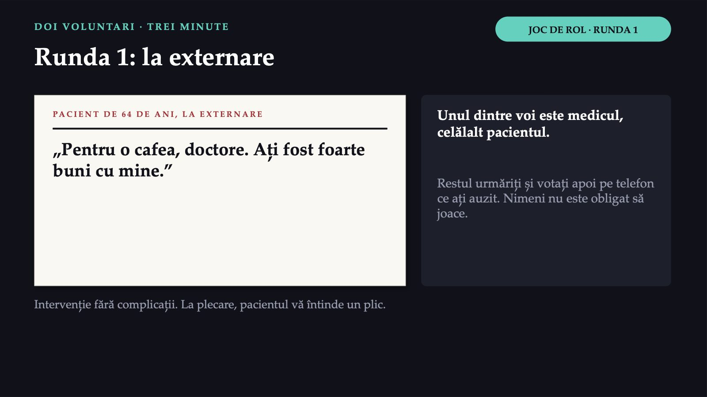
32 / 54Prima rundă, la externare. Un pacient de 64 de ani este externat după o intervenție fără complicații. La plecare vă întinde un plic: „Pentru o cafea, doctore. Ați fost foarte buni cu mine.” Doi voluntari, trei minute: unul este medicul, celălalt pacientul. Restul urmăriți și votați apoi pe telefon ce ați auzit.
Care dintre cele patru elemente le-ați auzit?
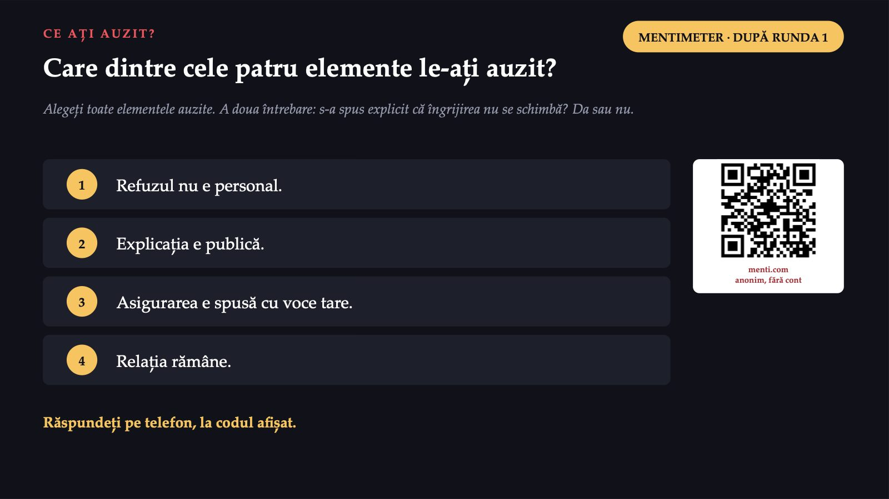
33 / 54După prima rundă, votați pe telefon: care dintre cele patru elemente le-ați auzit? A spus medicul explicit că îngrijirea nu se schimbă?
Runda 2: seara dinaintea operației
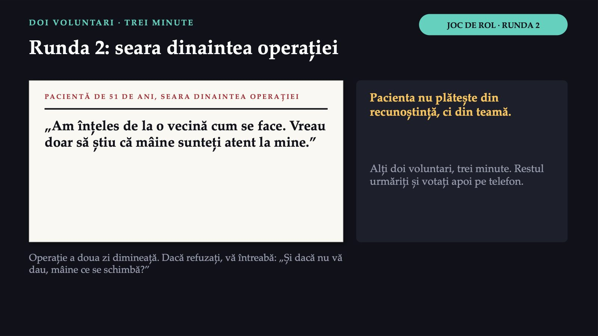
34 / 54A doua rundă, seara dinaintea operației. O pacientă de 51 de ani urmează să fie operată a doua zi dimineață. Vă dă un plic: „Am înțeles de la o vecină cum se face. Vreau doar să știu că mâine sunteți atent la mine.” Alți doi voluntari, trei minute; restul urmăriți și votați apoi pe telefon.
Care dintre cele patru elemente le-ați auzit?
35 / 54După a doua rundă, votați din nou pe telefon: care dintre cele patru elemente le-ați auzit? A spus medicul explicit că îngrijirea nu se schimbă?
Cinci minute
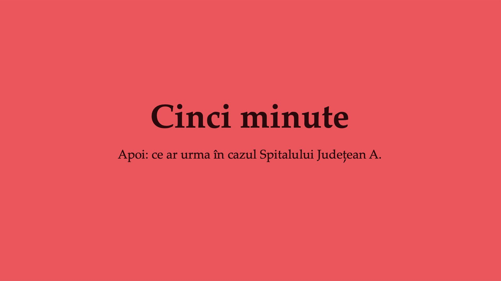
36 / 54Ne revedem peste cinci minute, cu deznodământul cazului.
Răspunsul apare după ședință
Răspunsul apare după ședință
28%
![CÂT DE DES SE PLĂTEȘTE INFORMAL · 1 Același sondaj din 2013, două calcule Eurobarometrul special 397: întâi, ați fost în ultimele 12 luni la un medic sau într-o unitate publică? Apoi, numai aceștia: ați dat ceva în afara plăților oficiale? 28% România: cea mai mare valoare din Uniunea Europeană 5% media europeană 8,95% Europa Centrală și de Est: 7 816 utilizatori 29,65% România: 470 de utilizatori Numai printre cei care folosiseră servicii publice de sănătate. Sursa: Eurobarometrul special 397 și reanaliza lui Williams și Horodnic · A064, A873, A874.](diapozitive/C06/038.jpg) 38 / 54
38 / 54Ca să știm cu ce se confruntă un medic tânăr, avem nevoie de cifre, date cu anul și cu întrebarea pusă, pentru că sursele nu măsoară același lucru. Eurobarometrul special 397, făcut în februarie–martie 2013, i-a întrebat întâi pe oameni dacă fuseseră, în ultimele 12 luni, la un medic sau într-o unitate sanitară publică, apoi, numai pe aceștia, dacă dăduseră ceva în afara plăților oficiale. În România, 28% dintre cei care folosiseră servicii publice de sănătate au răspuns „da”, cea mai mare valoare din Uniunea Europeană, față de o medie europeană de 5%. Colin Williams și Adrian Horodnic au reanalizat același sondaj pentru Europa Centrală și de Est, tot numai printre utilizatori. Dintre cei 7 816 utilizatori din regiune, 8,95% au făcut plăți informale. În România, dintre 470 de utilizatori, 29,65%. Doar 17% dintre utilizatorii din eșantion erau din România și Lituania, dar peste jumătate, 54%, dintre cei care plăteau informal în regiune erau din aceste două țări.
3,2%
![CÂT DE DES SE PLĂTEȘTE INFORMAL · 2 A treia cifră măsoară altceva 3,2% dintre pacienții externați: asistentele sau medicii le-au cerut mită (254 de spitale). Spitale județene: 6,7% în 2017, 3,8% în 2021. NU LE PUNEȚI UNA LÂNGĂ ALTA Primele două: același sondaj; diferența ține probabil de eșantion. Întrebarea din 2013 număra și donația către spital, permisă azi. A treia: cereri explicite de mită, raportate prin mesaj. Pacienta noastră nu ar intra în a treia: nimeni nu i-a cerut nimic. Sursa: A044, A045, A047, A050, A063, A064.](diapozitive/C06/039.jpg) 39 / 54
39 / 54O sursă românească mai recentă măsoară altceva. Mecanismul de feedback al pacientului, care funcționează din decembrie 2016, trimite un chestionar prin mesaj scurt pacienților externați din spitalele publice. O analiză a răspunsurilor din 254 de spitale, între 2017 și 2021, a găsit că, în medie, 3,2% dintre pacienți au răspuns „da” la întrebarea dacă asistentele sau medicii le-au cerut mită. În spitalele județene, proporția a scăzut de la 6,7% în 2017 la 3,8% în 2021. Autorii avertizează că sondajul poate avea erori de selecție. Nu puneți aceste cifre una lângă alta ca pe o serie. Primele două vin din același sondaj din 2013 și din aceeași populație; diferența dintre 28% și 29,65% ține probabil, cel puțin în parte, de eșantion. Întrebarea din 2013 număra, pe lângă banii și cadourile date unei asistente sau unui medic, și donația către spital, pe care legea o permite astăzi. A treia cifră măsoară cererile explicite de mită, raportate prin mesaj. Pacienta din cazul nostru nu ar fi intrat în a treia: nimeni nu i-a cerut nimic.
Distanța dintre lege și normă
 40 / 54
40 / 54Williams și Horodnic au încercat să explice de ce unii plătesc și alții nu. Au măsurat, pentru fiecare om, cât de departe sunt regulile scrise de ce crede el că e acceptabil. Cei care plătiseră informal găseau aceste gesturi mai acceptabile decât cei care nu plătiseră. Cu cât distanța dintre ce scrie în lege și ce cred oamenii că este normal era mai mică, cu atât se plătea mai rar informal; la fel acolo unde guvernarea regiunii era de calitate mai bună. Este un studiu transversal, pe date din 2013: arată o asociere, nu ce o produce. Dar spune ceva important pentru dr. R. și pentru colegul de gardă: „toată lumea face așa” nu este adevărat nici măcar în România, unde, după aceste date, majoritatea utilizatorilor nu au plătit. Iar ce cred oamenii că e normal este exact lucrul pe care îl pot schimba, puțin câte puțin, frazele spuse cu voce tare.
Nu avem o tehnică de refuz dovedită
![CE ȘTIM DESPRE REFUZ Nu avem o tehnică de refuz dovedită O sinteză sistematică 10 studii din 468 de înregistrări: patru calitative, trei cantitative, trei cu metode mixte. Autorii cer studii bine construite. Un studiu american, după rezumat 1 141 de adulți, 56 de medici de familie. Refuzul unor cereri a fost asociat cu satisfacție mai mică; la celelalte, inclusiv antibiotice, asocierea nu a fost semnificativă. Contează asigurarea explicită că îngrijirea nu se schimbă. Sursa: sinteza sistematică, 2019; studiul american, după rezumat · A878, A879, A880, A881.](diapozitive/C06/041.jpg) 41 / 54
41 / 54Ați vrea, probabil, o tehnică de refuz dovedită. Nu avem una. Cea mai recentă sinteză sistematică pe care am găsit-o despre strategiile de reducere a plăților informale a inclus 10 studii din 468 de înregistrări: patru calitative, trei cantitative și trei cu metode mixte. Autorii înșiși scriu că sunt necesare studii bine construite. Nu am găsit în această sinteză un studiu care să compare o strategie de refuz cu un grup de control. Avem, în schimb, date despre o situație înrudită: ce se întâmplă cu satisfacția pacientului când medicul îi refuză o cerere. Un studiu american cu 1 141 de adulți și 1 319 consultații la 56 de medici de familie, citit după rezumatul lui, a găsit că refuzul trimiterii la specialist, al medicației pentru durere, al altor medicamente noi și al analizelor a fost asociat cu o satisfacție mai mică; pentru celelalte cereri, inclusiv antibioticele, asocierea nu a fost semnificativă statistic. Este un studiu despre cereri medicale, nu despre bani, și este transversal. Îl folosim pentru un singur lucru: refuzul unei cereri nu a fost asociat întotdeauna cu o satisfacție mai mică față de medic. Interpretarea noastră, nu a studiului, este că relația o strică mai degrabă sentimentul pacientului că a pierdut ceva de care are nevoie. De aceea, în refuzul unei plăți, asigurarea explicită că îngrijirea nu se schimbă nu este o politețe, ci partea principală.
Transferul prin analogie
![AL TREILEA TERMEN NOU Transferul prin analogie Folosiți rezultatul unui studiu făcut într-o situație pentru o altă situație, asemănătoare, dar nu identică. În cuvinte de zi cu zi: „acolo a mers, deci aici ar putea merge”. O ipoteză, nu o dovadă. CÂT DIN ȘEDINȚA DE AZI ESTE TRANSFER 1 Fraza seniorului din sala de operație simulată. 2 Liderul care dă sens grupului. 3 Refuzul, pentru unele cereri, fără scădere a satisfacției. Niciunul nu a fost măsurat pe plicul de pe noptieră. Definiția acestui curs · A870, A868, A881.](diapozitive/C06/042.jpg) 42 / 54
42 / 54Al treilea termen nou: transferul prin analogie. Înseamnă să folosiți rezultatul unui studiu făcut într-o situație pentru o altă situație, asemănătoare, dar nu identică. În cuvinte de zi cu zi: „acolo a mers, deci aici ar putea merge”. Este o ipoteză rezonabilă, nu o dovadă, și trebuie spusă ca atare. Aproape tot ce v-am spus despre refuz în această ședință este transfer prin analogie: fraza seniorului din sala de operație simulată, liderul care dă sens grupului, refuzul care, pentru unele cereri, nu a fost asociat cu o satisfacție mai mică. Niciunul nu a fost măsurat pe plicul de pe noptieră. Le folosim pentru că nu avem ceva mai bun și pentru că mecanismul pare același. Dacă cineva vă spune că „s-a dovedit” că o anumită formulă reduce plățile informale, întrebați unde.
Ce îi răspunde dr. R. fiului?
![MENTIMETER · VOTUL 3 A TREIA DECIZIE · PE HOLUL SPITALULUI Ce îi răspunde dr. R. fiului? Fiul unui pacient oferă un plic; dr. R. refuză. Fiul: „Deci nu vreți să vă ocupați de el?” a „Nu am voie, ar fi mită. Vă rog să nu insistați.” b „Ba da, mă ocup de el ca de toți pacienții. E regula pentru toți, deci nu se schimbă nimic pentru tatăl dumneavoastră. Vreți să vă spun ce urmează?” c „Vorbiți cu șeful secției, el decide astfel de lucruri.” d Acceptă plicul, ca să nu-l jignească, și îl donează apoi spitalului. Răspundeți pe telefon, la codul afișat. menti.com anonim, fără cont](diapozitive/C06/043.jpg) 43 / 54
43 / 54A treia decizie, pe holul spitalului: fiul unui pacient vârstnic îi oferă dr. R. un plic. Dr. R. refuză, iar fiul întreabă: „Deci nu vreți să vă ocupați de el?” Ce îi răspunde dr. R.? Votați singuri.
Runda 3: pe hol
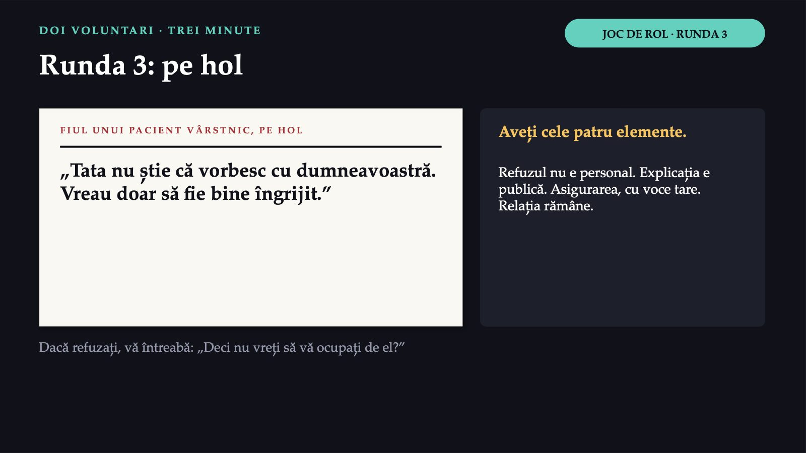
44 / 54A treia rundă, pe hol. Fiul unui pacient vârstnic vă oprește: „Tata nu știe că vorbesc cu dumneavoastră. Vreau doar să fie bine îngrijit.” Dacă refuzați, vă întreabă: „Deci nu vreți să vă ocupați de el?” Doi voluntari, trei minute, cu cele patru elemente în față. Apoi votați din nou.
Ce îi răspunde dr. R. fiului?
![MENTIMETER · AL DOILEA VOT DUPĂ RUNDA A TREIA Ce îi răspunde dr. R. fiului? Fiul unui pacient oferă un plic; dr. R. refuză. Fiul: „Deci nu vreți să vă ocupați de el?” a „Nu am voie, ar fi mită. Vă rog să nu insistați.” b „Ba da, mă ocup de el ca de toți pacienții. E regula pentru toți, deci nu se schimbă nimic pentru tatăl dumneavoastră. Vreți să vă spun ce urmează?” c „Vorbiți cu șeful secției, el decide astfel de lucruri.” d Acceptă plicul, ca să nu-l jignească, și îl donează apoi spitalului. Răspundeți pe telefon, la codul afișat. menti.com anonim, fără cont](diapozitive/C06/045.jpg) 45 / 54
45 / 54După runda a treia, votați din nou, pe aceleași variante.
Ce a mutat runda a treia?
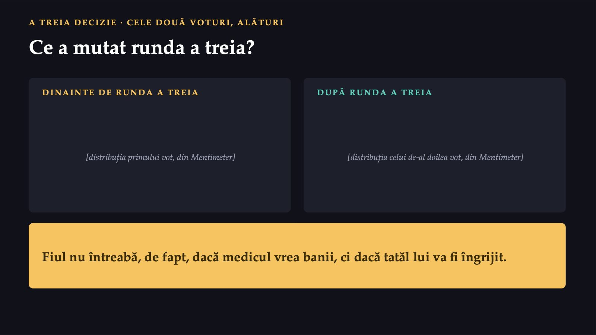
46 / 54Iată cele două voturi, unul lângă altul: înainte și după runda a treia. Fiul nu întreabă, de fapt, dacă medicul vrea banii, ci dacă tatăl lui va fi îngrijit.
Răspunsul apare după ședință
Răspunsul apare după ședință
„Medicul care refuză plata informală, într-un sistem în care ea este norma, face un rău pacientului.”
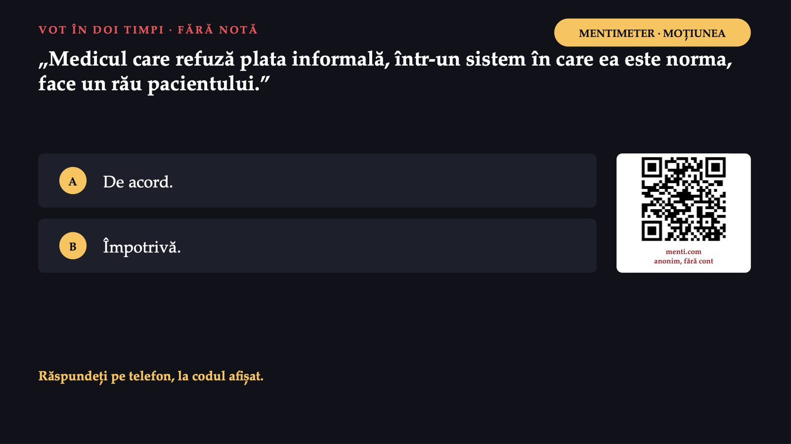
48 / 54Moțiunea de azi: medicul care refuză plata informală, într-un sistem în care ea este norma, face un rău pacientului. Sunteți de acord? Votați singuri; nu se notează.
Câte o dovadă pentru fiecare tabără
![DOUĂ PLICURI SIGILATE, DESCHISE Câte o dovadă pentru fiecare tabără PLICUL A · PENTRU MOȚIUNE Unde distanța dintre regulile scrise și ce cred oamenii că e normal este mai mare, oamenii plătesc mai des informal. Williams și Horodnic, Eurobarometrul special 397, date din 2013. Argumentul taberei, nu o constatare din sursă: un pacient care crede că plicul e normal poate pleca mai speriat după un refuz. PLICUL B · ÎMPOTRIVA MOȚIUNII Zece studii: patru calitative, trei cantitative, trei mixte. Autorii cer studii bine construite. Sursa: A876, A877, A873; A878, A879.](diapozitive/C06/049.jpg) 49 / 54
49 / 54Deschidem cele două plicuri sigilate, câte unul pentru fiecare tabără, fiecare cu o singură dovadă. Plicul pentru moțiune: unde distanța dintre regulile scrise și ce cred oamenii că e normal este mai mare, oamenii plătesc mai des informal; datele sunt din 2013, pe Eurobarometrul special 397. Sub dovadă stă argumentul taberei, care nu este o constatare din sursă: un pacient care crede că plicul e normal poate pleca mai speriat după un refuz. Plicul împotriva moțiunii: zece studii, patru calitative, trei cantitative și trei mixte; autorii cer studii bine construite. Urmează un minut de gândire.
„Medicul care refuză plata informală, într-un sistem în care ea este norma, face un rău pacientului.”
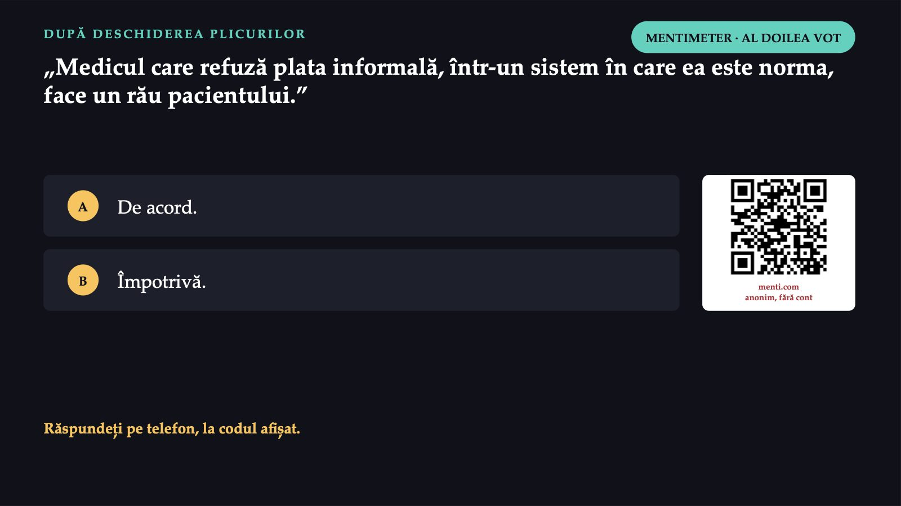
50 / 54După un minut de gândire, votați din nou, pe aceeași moțiune.
Ce s-a mutat după plicuri?
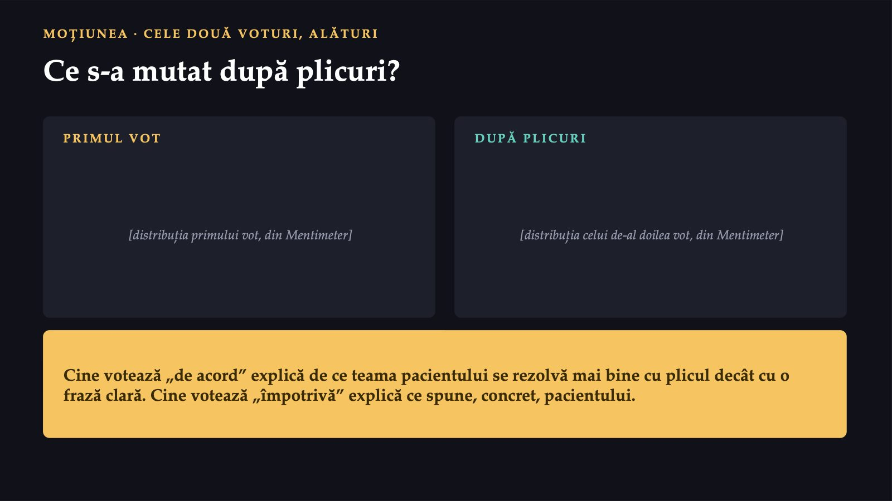
51 / 54Iată cele două voturi, alături. Moțiunea e bine aleasă tocmai pentru că are o parte de adevăr: un refuz fără asigurare poate lăsa pacientul mai speriat decât era. De aceea ședința s-a ocupat atât de mult de felul în care se spune „nu”. Dar „norma” din moțiune nu este fixă: diferă mult între țări și între oameni, iar dovezile despre ce o schimbă lipsesc mai degrabă decât să arate că nu se poate schimba. Cine votează „de acord” trebuie să explice de ce teama pacientului se rezolvă mai bine cu plicul decât cu o frază clară. Cine votează „împotrivă” trebuie să explice ce spune, concret, pacientului.
Luni dimineață
 52 / 54
52 / 54Ce faceți diferit de luni. Când cineva vă spune că oamenii se supun oricum, întrebați: în ce condiție și din câți? Când sunteți cel mai mare în grad dintr-o echipă, spuneți explicit, de la început, ce este normal acolo: o frază a seniorului poate conta mult. Când un pacient vă oferă bani, refuzați plata, nu omul, și spuneți cu voce tare că îngrijirea lui nu se schimbă. Dacă un pacient vrea să facă o donație, ea se face numai către spital, prin procedura lui, și nu schimbă nimic din îngrijire. Iar când cineva vă spune că o metodă s-a dovedit, întrebați dacă s-a măsurat chiar pe situația voastră sau pe una asemănătoare. Asta îi lipsea dr. R. în seara cu plicul: o frază gata, spusă cu voce tare.
Plicul, Milgram, Stanford, legea: zece întrebări
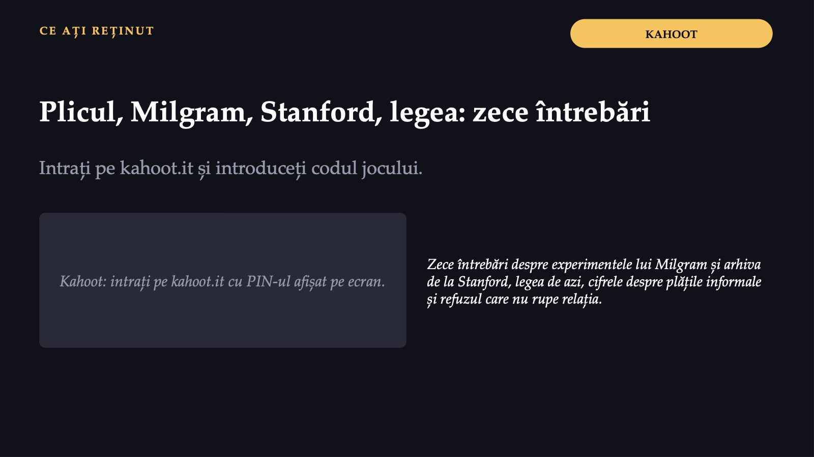
53 / 54Zece întrebări despre ce a rămas din ședință: ce a arătat Milgram, ce arată arhivele de la Stanford, ce spune legea acum și cum arată un refuz care nu rupe relația cu pacientul.
Trei întrebări pentru final
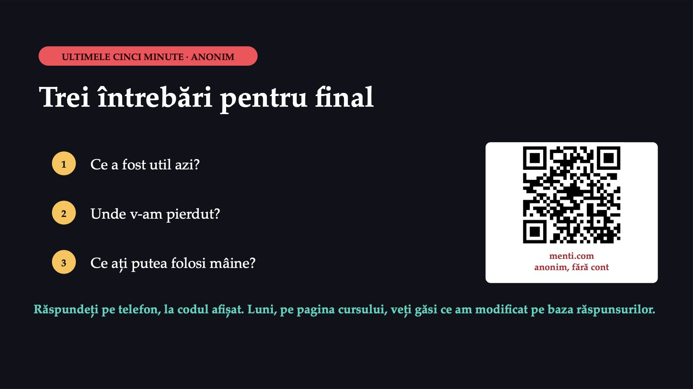
54 / 54Trei întrebări anonime, pe telefon, la codul afișat: ce a fost util azi, unde v-am pierdut și ce ați putea folosi mâine. Luni, pe pagina cursului, veți găsi ce am modificat pe baza răspunsurilor.
Săgeți sau spațiu: navigare · O: vedere de ansamblu · N: notele prezentatorului · F: ecran complet · Esc: închidere